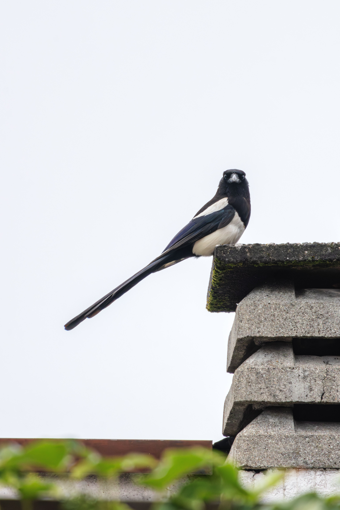

The Eurasian Magpie is a highly recognizable member of the crow family, with contrasting black-and-white plumage, a very long graduated tail, and glossy blue-green iridescence on its wings and tail. It is highly adaptable and occurs in farmland, woodland edges, grassland, parks, gardens, villages, and cities. Magpies are omnivorous and eat insects, seeds, fruits, small animals, eggs, carrion, and food around human settlements. Their intelligence and curiosity have made them prominent in European folklore and culture. Compared with the Eurasian Jay, the Magpie is much more strongly black and white, has a far longer tail, and lacks the Jay's blue wing patch and pinkish-brown body. It also differs from the Rook and Carrion Crow by its white belly and shoulders and its extremely long tail. Magpies construct large, distinctive domed nests and are often heard giving their repetitive, harsh calls when alarmed.